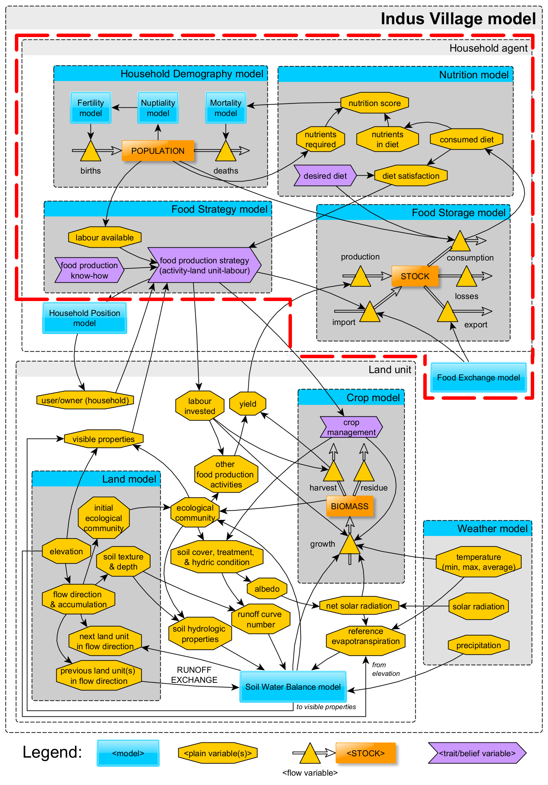
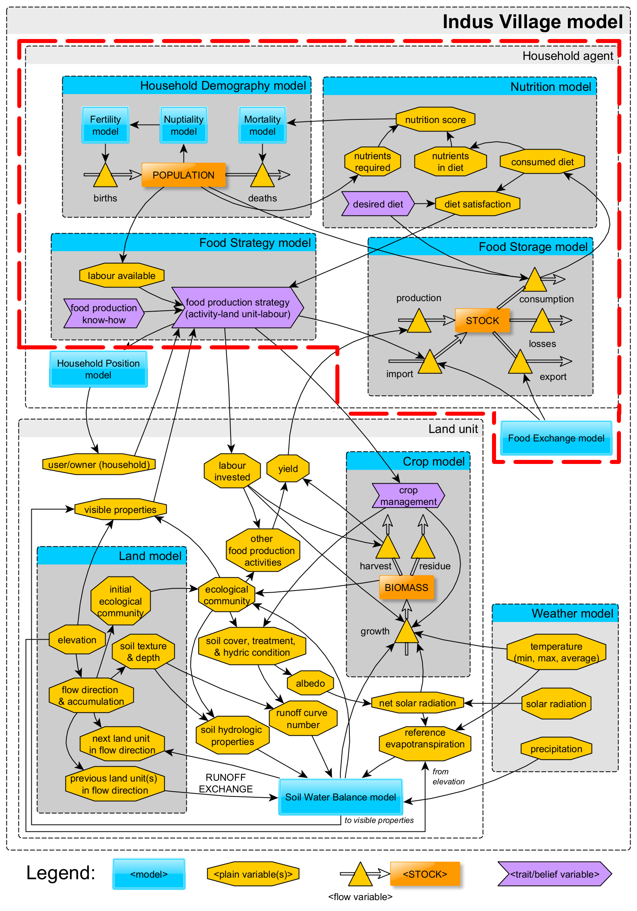

Foodways, Nutrition, and Demography
in the Indus Village model
Andreas Angourakis
(@AndrosSpica),
Jennifer Bates
(@DrJenniferBates),
Akshyeta Suryanarayan
,
Cameron A. Petrie
https://andros-spica.github.io/CAA-Angourakis-et-al-2022/index.html?print-pdf (printable version)
1. Indus Village overview
Image source: Minecraft Wiki (© Mojang Studios), via GamepediaEnd-goals
Explore human adaptation to the variability
in landscapes of NW India during the Mature Harappan (urban phase of the Indus Civilisation)
Expose the sustainability of
food production regimes,
mainly in terms of cropping strategies,
in front of climate change

 

2. Food economy in the Indus Civilisation
Image source: Lhendup G Bhutia in openthemagazine.com (© Mojang Studios)
Archaeobotany
- barley/wheat (winter)
- millet/rice (summer)
- Pulses and other crops
- Non-crops (e.g. fruits)
- Plants for other uses


Zooarchaeology
- Animal husbandry:
zebu, water buffalo, sheep, goat, pig(?), chicken(?) - Fishing: freshwater fish and molluscs
- Hunting: wild ruminants, hare, birds
Joglekar, Sharada & Abhayan 2013 | Chase, Meiggs & Ajithprasad 2020
Abhayan et al. 2020 | Lightfoot et al. 2020 | LJ Miller 2004 | RP Wright 2010
Role of herding?
4.png)


Residue Analysis
- C3 vs C4 plants signature
- Meat vs secondary products
- Ruminant vs non-ruminant fat
Suryanarayan et al. 2021
Stewing or roasting?
Are contemporary culinary practices a good reference?
Food exchange


Household autonomy, local reciprocity and/or market-like economy?
RP Wright 2010
3. Household Food Economy model
Image source: Danica Torreja in gamersdecide.com (© Mojang Studios)
Food Storage model

Food Storage model

Link to code (repository) | documentation under development
Food Exchange model

Food Exchange model

Link to code (repository) | documentation under development
Nutrition model

Yay, Andreas, please show us those tables!
Nutrition model

Link to code (repository) | Calculation of Nutrition score (diagram)
other documentation under development
Household Demography model

Fertility & Nuptiality: Peristeva & Kostaki 2007; 2015
Mortality: Coale, Demeny, & Vaughan 1983 | Jones 2007, demogR package
Household Demography model
Effect of nutrition over mortalityHousehold Demography model
Household growth and formationHousehold Demography model


Link to code (repository) | Calculation of Nutrition score (diagram)
other documentation under development
Calculation of labour
Food Strategy model

Food Strategy model
Design principles:
- reinforced learning
- stimulus for change as degree of diet shortages
- food strategy → triplet use/activity, conditions, investment
- challenge: multidimensional state space, tryouts with high stakes
code and documentation under development
Conclusions
- Modelling mechanisms: KIDS | Modelling data: KISS
(Edmonds & Moss 2004) - Socio-ecological models can/should make use of sources in multiple disciplines
- modularity and patience needed for stabilise simulation as a method in archaeology
'TwoRains' project
ERC, 2015-2021
Acknowledgements
Thanks to the Land, Water and Settlement and TwoRains teams:
Aftab Alam, Alessandro Ceccarelli, Sagorika Chakraborty,
Sudarshan Chakradhari, Arti Chowdhary, Yama Dixit, Charly French, Adam Green,
Henry Green, Lily Green, David Hodell, Penny Jones, Carla Lancelotti, Emma Lightfoot, Frank Lynam,
Sayantani Neogi, Hector Orengo, Arun Kumar Pandey, Danika Parikh, Vikas Pawar, Amit Ranjan,
David Redhouse, Dheerendra Pratab Singh, & Akshyeta Suryanarayan.
Special thanks also to the Department of AIHC and Archaeology, BHU, the European Research Council (ERC),
and the UK-India Education and Research Initiative (UKIERI) for support and funding, and to the Archaeological
Survey of India for permission to carry out the work.
THANK YOU FOR YOUR ATTENTION!
https://andros-spica.github.io/CAA-Angourakis-et-al-2022/index.html?print-pdf (printable version)